本页面只用于人工确认事件范围。蓝线是道路曲率候选，橙线是旧 v400 参考，红线是车辆动态响应候选。最终以人工填写的 tables/manual_event_labels_template_v0_1.csv 为准。
raw road: 6 | old v400: 87 | raw dynamic: 85 | status: ok
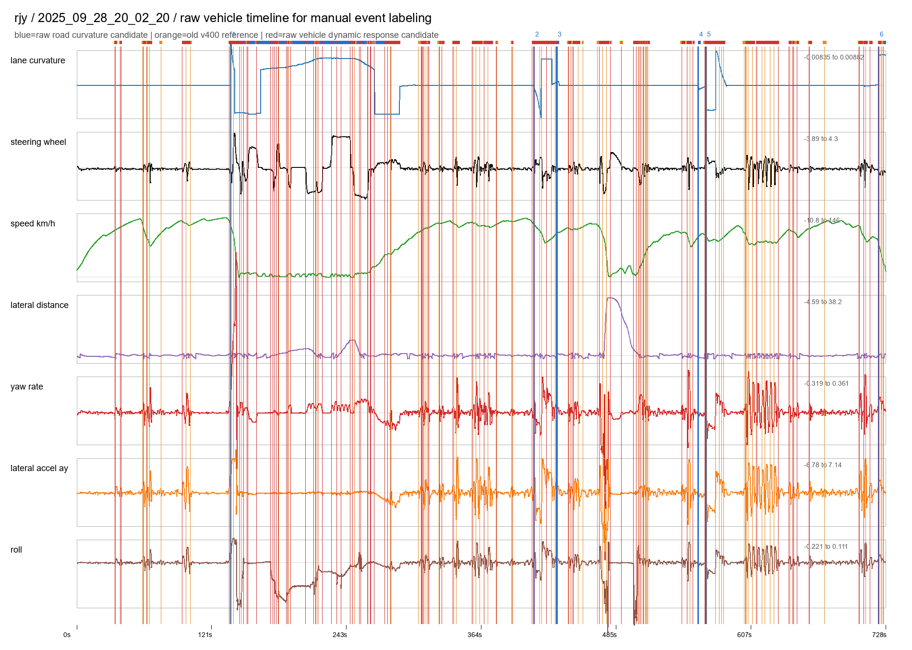
raw road: 6 | old v400: 126 | raw dynamic: 95 | status: ok
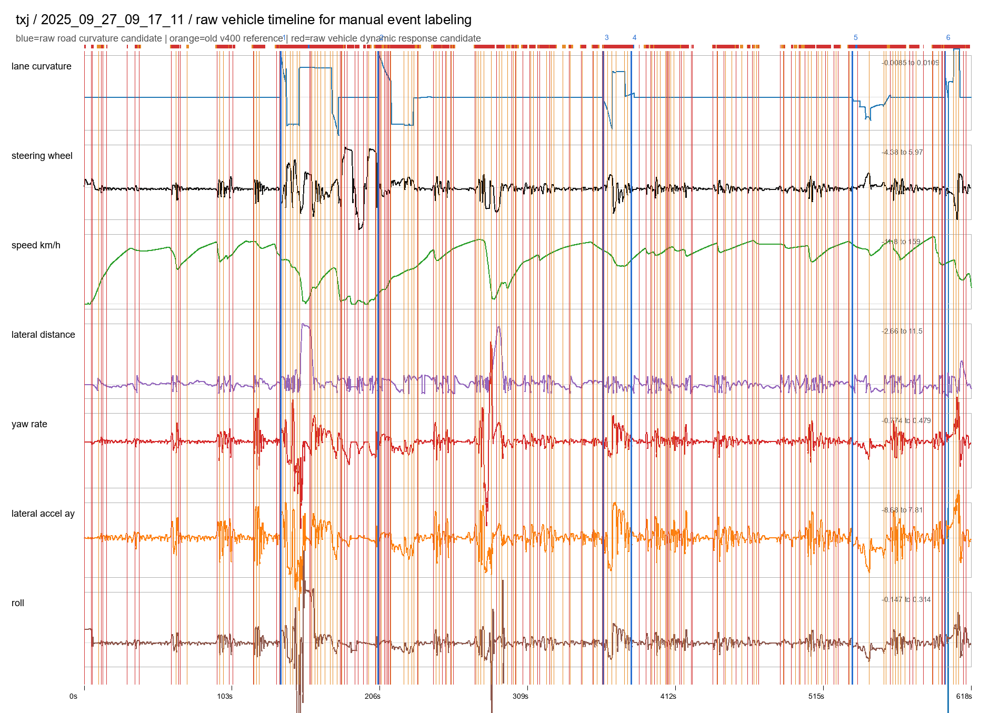
raw road: 6 | old v400: 77 | raw dynamic: 66 | status: ok
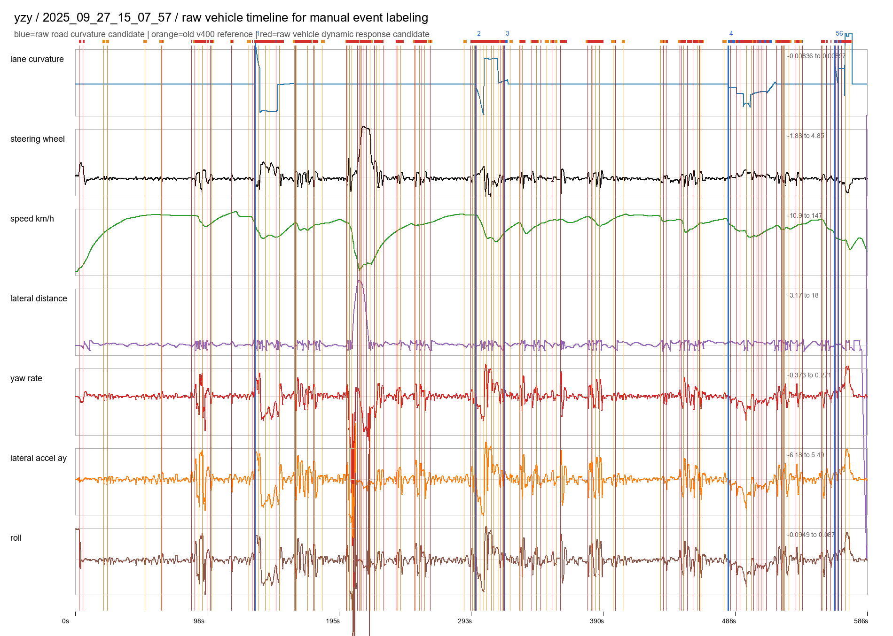
raw road: 6 | old v400: 92 | raw dynamic: 65 | status: ok
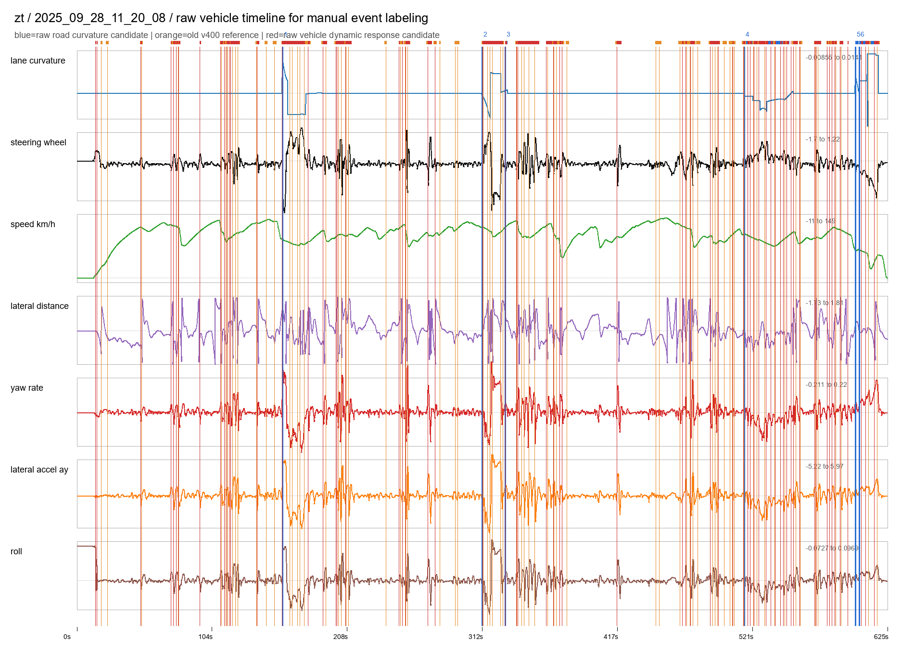
raw road: 5 | old v400: 94 | raw dynamic: 55 | status: ok
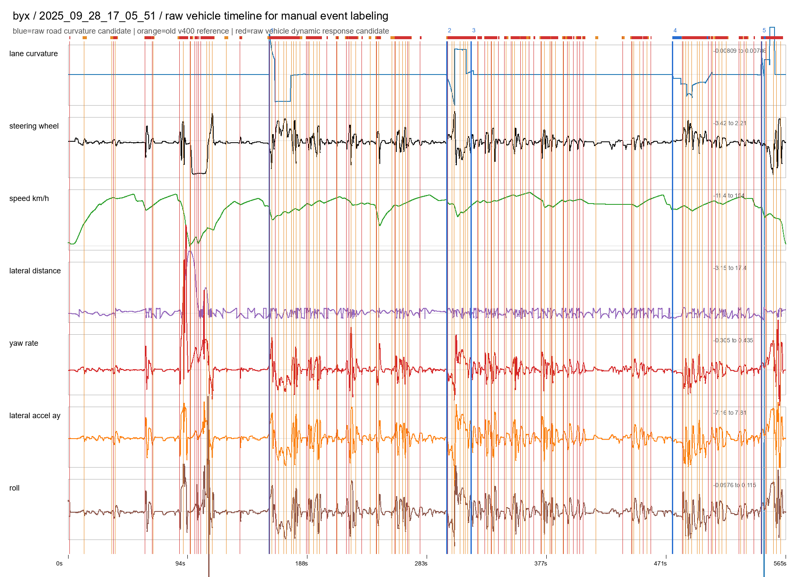
raw road: 5 | old v400: 102 | raw dynamic: 63 | status: ok
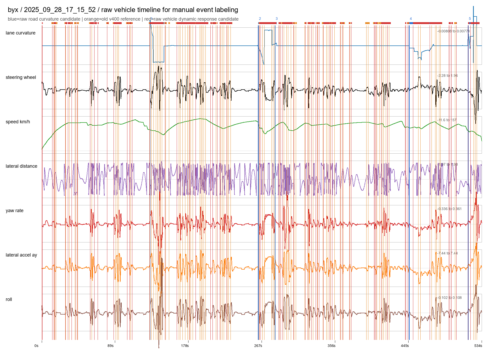
raw road: 5 | old v400: 98 | raw dynamic: 73 | status: ok
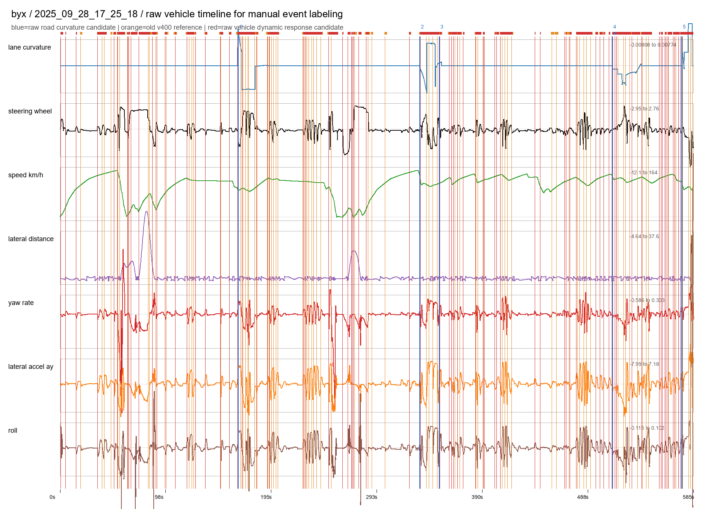
raw road: 5 | old v400: 109 | raw dynamic: 90 | status: ok
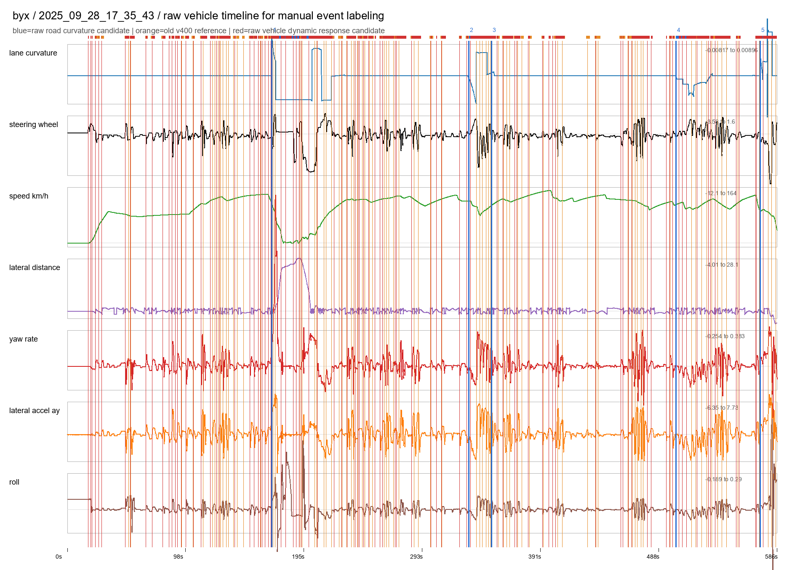
raw road: 5 | old v400: 99 | raw dynamic: 77 | status: ok
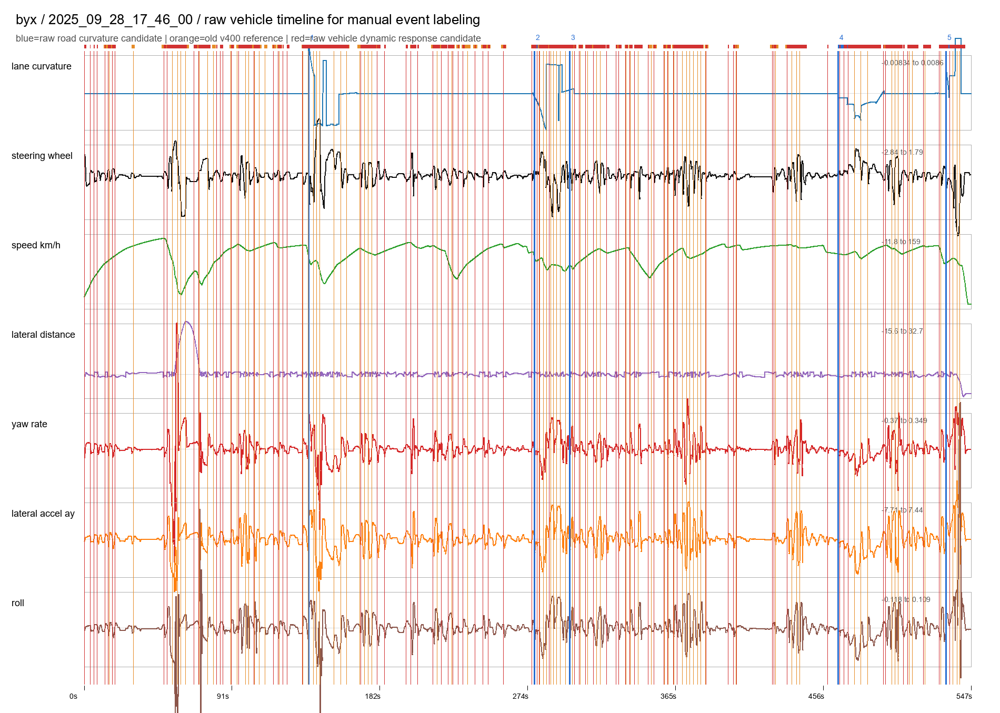
raw road: 5 | old v400: 32 | raw dynamic: 31 | status: ok
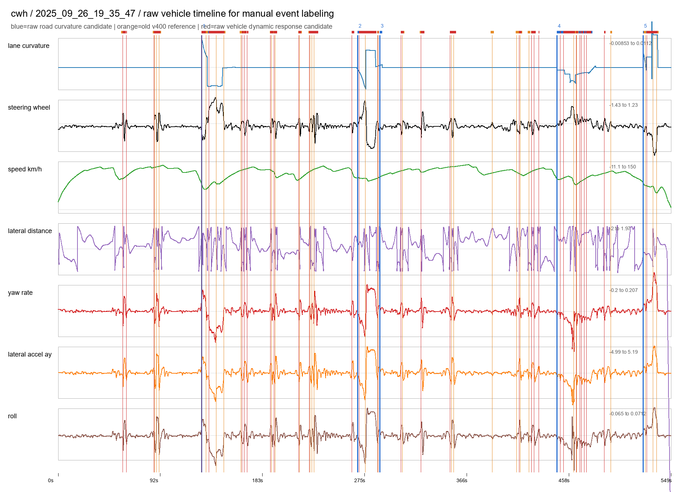
raw road: 5 | old v400: 35 | raw dynamic: 30 | status: ok
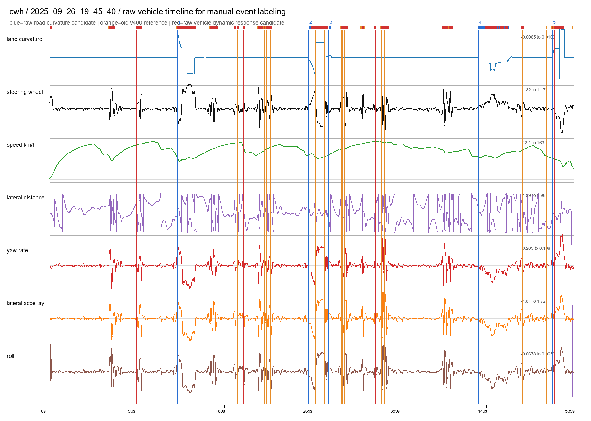
raw road: 5 | old v400: 33 | raw dynamic: 40 | status: ok
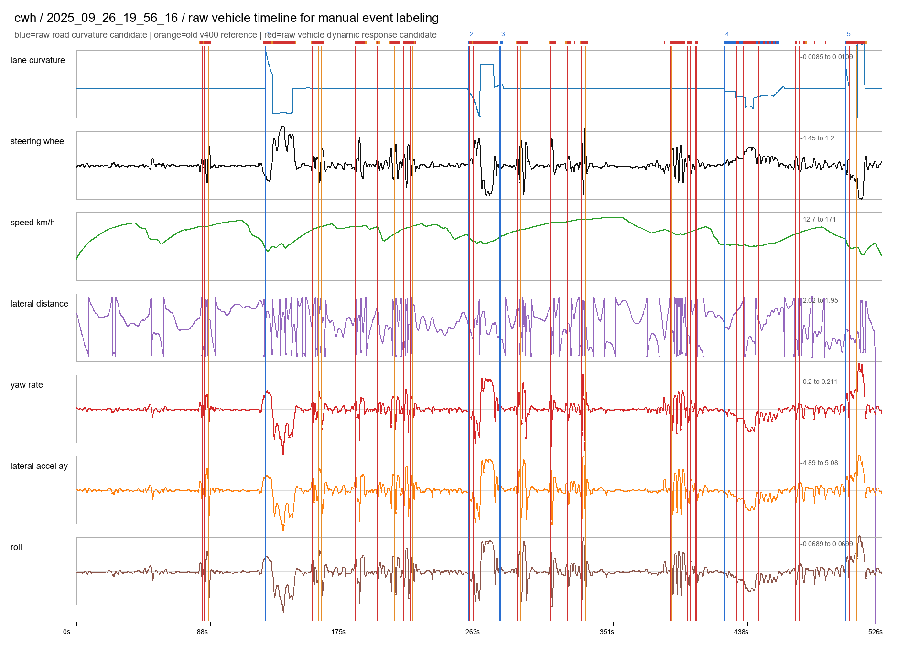